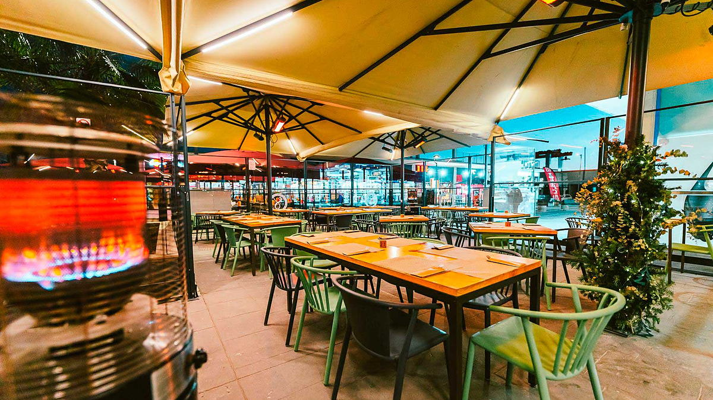
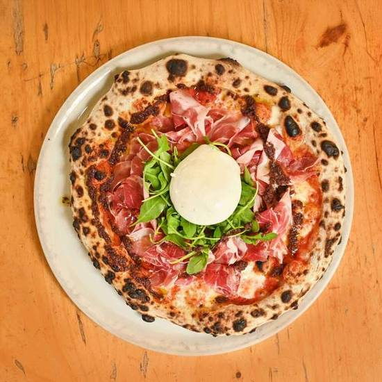
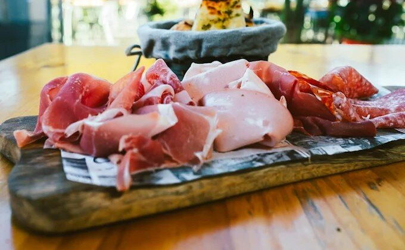
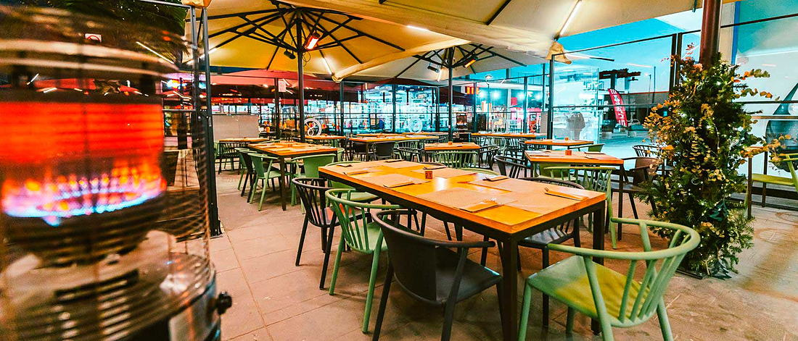

Marina Port Premià · Premià de Mar
SalicorniaPizza i Pasta
Pizza italiana y pasta, servidas frente al puerto de Premià de Mar.
Italia servida
junto al mar
Nuestra carta es un reflejo de la tradición italiana y de nuestro compromiso con la calidad. Elaboramos pizzas con masa artesanal fermentada lentamente y con ingredientes seleccionados, tanto locales como importados de Italia.
Se come dentro, con la barra y las lámparas encendidas, o fuera en la terraza, con el puerto alrededor. A mediodía, de noche, en pareja o en una mesa larga.
- Cocina
- ItalianaPizza italiana, pasta y postres italianos
- Dónde
- En el puertoMarina Port Premià, Local 408/409
- Terraza
- AmpliaSombrillas, estufas y mesas de madera


Pizza con carácter italiano
Pizzas sin gluten acompañadas de salsas caseras llenas de sabor: Fior di Latte, tomate San Marzano, burrata, Parma, pistacho o trufa.

Pasta hecha para quedarse en la memoria
Nuestras pastas frescas se elaboran de forma artesanal, con sémola de trigo duro y yema de huevo, siguiendo la tradición italiana. Una textura sedosa, un sabor auténtico y una base perfecta para acompañar nuestras salsas caseras.
Un vistazo a la carta
Entrantes para compartir, pizzas rojas y blancas, pasta, postres italianos y una selección de vinos italianos y catalanes.
La carta de postres puede cambiar según la temporada.
Carta de vinos completa en el restaurante.



Donde la pizza sabe mejor
Sombrillas, mesas de madera, estufas cuando refresca y luz cálida al caer la tarde. La terraza es el plan: comidas largas, cenas de verano y sobremesas que no se acaban.
- Terraza amplia
- Mesas para grupos
- Take away
El sitio, los platos, la luz
Fotografías del restaurante, del horno y de la terraza en Marina Port Premià.
Reseñas recientes en Google
-
Buena pizzería, tanto en el local como para pedir a domicilio, precio alto pero buena calidad y servicio.
★★★★★ Sergio Cuenca
-
Todo muy bueno.
★★★★★ Maria Rosa M V
-
Las pizzas están brutales, y el menú de pizza muy completo 👌
★★★★★ Sonia Soriano Diaz
Tu mesa está aquí
Elige día, hora y número de personas. Si prefieres hablar con nosotros o venís muchos, llámanos y lo organizamos.
- Elige día y hora
- Cuántos sois
- Confirmación al instante
-
Dónde estamos Marina Port Premià, Local 408/409
08330 Premià de Mar, Barcelona -
Horario
- Lunes Cerrado
- Martes 13:00 – 23:00
- Miércoles a sábado 13:00 – 23:30
- Domingo 13:00 – 23:00
-
Grupos y celebraciones Escríbenos por email
Marina Port Premià
Una mesa, una pizza y el Mediterráneo al lado. Estamos dentro del puerto deportivo de Premià de Mar, en la zona de restaurantes y comercios.
Marina Port Premià, Local 408/409
08330 Premià de Mar, Barcelona
El mapa se carga desde Google Maps. Pulsa para verlo aquí mismo.